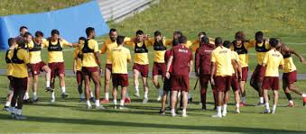

Galatasaray Şampiyonlar Ligi'ne Hazırlanıyor
Galatasaray takımı, Avrupa kupalarındaki hedefi doğrultusunda Florya Metin Oktay Tesisleri'nde yoğun bir hazırlık kampı düzenliyor. Teknik direktörün yabancı transferlere verdiği özel rol, taktik çalışmaları hızlandırdı ve takımın moralini yükseltti.
